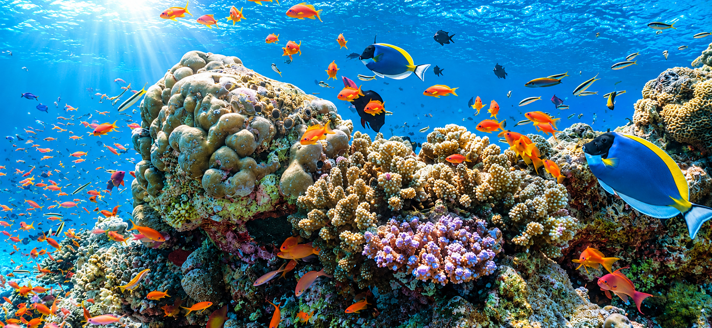

Sustainable Development Goals
SDG 14: Life Below Water
WHAT IS LIFE BELOW WATER?
Life Below Water is an initiative that aims to protect and conserve the oceans, seas, and marine resources. Its mission is to reduce marine pollution, protect marine life, prevent overfishing, and preserve underwater ecosystems. By promoting the sustainable use of ocean resources, SDG 14 encourages everyone to help keep our oceans clean and healthy for future generations. It also raises awareness about the importance of marine biodiversity and the threats that human activities pose to underwater life.
Everyone can contribute by reducing plastic waste, recycling, participating in beach clean-ups, and supporting environmentally friendly practices. Through education, awareness, and collective action, we can help protect our oceans and ensure that marine ecosystems remain healthy for generations to come. You can also follow the United Nations Sustainable Development Goals on social media to learn more about global efforts to protect our oceans and marine life.
Marine ecosystems play a vital role in maintaining the balance of life on Earth. Oceans help regulate the Earth's climate, produce a significant portion of the oxygen we breathe, and provide food and livelihoods for millions of people around the world. However, threats such as climate change, coral bleaching, and the destruction of marine habitats continue to put these ecosystems at risk. By understanding these challenges and supporting conservation efforts, we can help preserve marine biodiversity and ensure that future generations can continue to benefit from the ocean's natural resources.

About This Website
This website was created to bring about awareness about the importance of protecting our oceans, seas and marine ecosystems. Through informative content, statistics and a interactive quiz, this website help educate visitors about the challenges facing marine life and the importance of keeping our oceans clean.
It also encourages individuals to make environmentally responsible choices and become more aware of how their actions affect underwater ecosystems.
My goal is to inspire people to take an interest in marine conservation and understand that even small actions can contribute to healthier oceans and a more sustainable future.